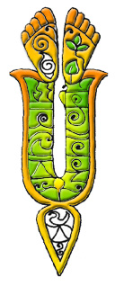

In Vrindavan, im Land Krischnas sind alle glücklich. Gott liebt alle Lebewesen, so wie alle Tiere, zwischen denen Er auch seine liebsten hat. Die Bilder in diesem Buch sind inspiriert von dem wunderbaren Buch „Sri Sri Radha Krishna Ganoddesha dipika“, welches von einem großen Devotee des Herrn, Srila Rupa Goswami geschrieben wurde (1489-1564), der hier die ewigen Beigesellten von Radha und Krishna beschreibt – seine Familienangehörigen, Freunde, Diener und Tiere, die wir hier präsentieren.
Der Sanskrit-Name eines jeden Tieres steht neben der Übersetzung auf Deutsch. Dankeschön an Bimala devi dasi, welche die wunderschönen Bilder gezeichnet hat, und Dankeschön an die Arts of Vaisnava Culture.

VOR
HOME
NACH